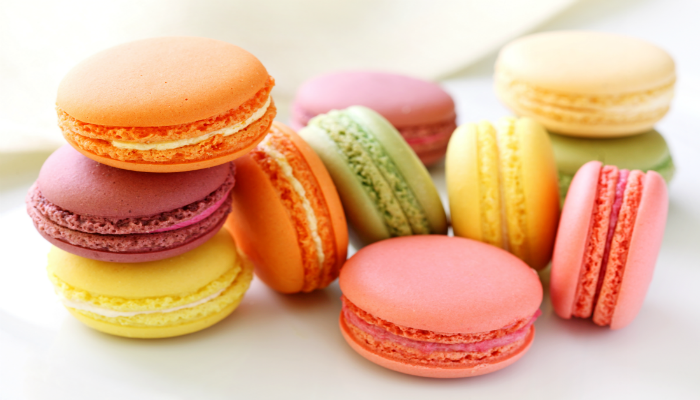

Usare il termine pasticcini o piccola pasticceria per parlare
delle primissime preparazioni dolci è sicuramente azzardato: si trattava in realtà di
impasti di pane, addolciti con miele, che nel Medioevo prendevano nomi diversi e si
presentavano come piccoli dolci cotti in stampi o su placche di metallo. Nei conventi,
dove gli ingredienti adatti in genere non mancavano, i religiosi elaboravano piccole
preparazioni dolci da vendere ai pellegrini di passaggio, a scopo benefico.
Si trattava di dolcetti molto semplici, a base di miele,
vino e marmellata. I biscotti, per esempio,
erano ricavati da una pasta di pane a bassissima lievitazione,
addolcita e sottoposta a una doppia cottura in tempi diversi,
allo scopo di eliminare completamente l’umidità e consentire una lunga
conservazione del prodotto finito, molto utile a quei tempi.
